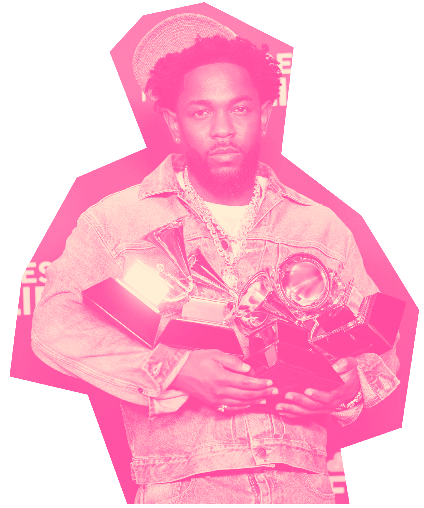
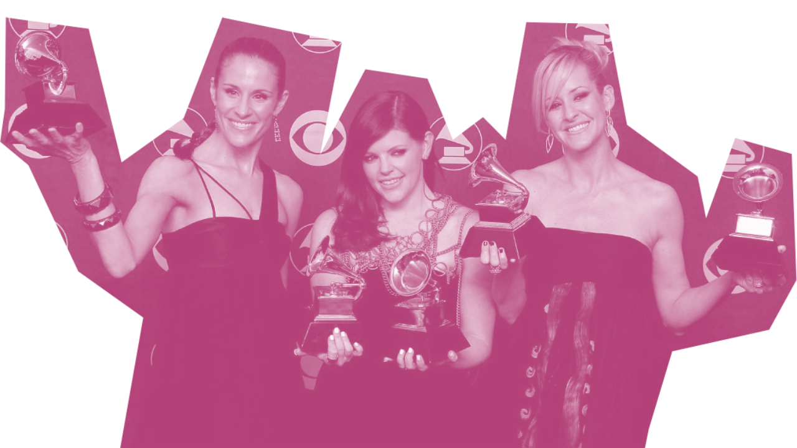

Los nominados
En los Premios Grammy las canciones son galardonadas a través de dos de las categorías principales, Grabación del Año siendo una de estas. Esta categoría premia la canción en cuanto al logro en general, considerando la interpretación, la producción y la ingeniería de la misma, de todas formas no se dejan de lado los elementos como la letra, la composición y la interpretación de segundas voces, pero sí son factores que entran en segundo plano, siendo más relevantes al momento de votar en esta categoría los primeros mencionados.
Por esto mismo, un Grammy de Grabación del Año se le entrega al artista, productor(es), ingeniero(s) y quienes hayan mezclado la canción, o sea todos aquellos involucrados en la grabación de la canción en cuestión, por esto el nombre de la categoría.
Esta categoría también se diferencia de otras en el sentido de que antes de que el Pop tomara el espacio que utiliza el día de hoy, el género que dominaba la categoría era el R&B, no el Rock. Esto, posiblemente, por las mismas razones en torno a la experimentación, hay mucho más espacio para tomar riesgos de producción en una canción de R&B que en una canción de Rock promedio.

A pesar de una mayor variedad de géneros dentro de la categoría, si miramos a los ganadores nuevamente el Pop es el género que sale en primer lugar. Además, se puede ver que en la época donde el Pop no era tan prominente, a pesar de haber una mayor cantidad de nominados de R&B, el género con más ganadores es el Rock. Tanto en el pasado como en el presente el género más popular termina por llevarse el premio, esto puede ser porque las canciones que siguen líneas más experimentales o que son menos populares pueden dividir el voto, haciendo que las canciones más populares se lleven una mayoría.
Esto también se puede evidenciar en que, cuando han ganado canciones de géneros que no son ni Pop ni Rock es porque son canciones universalmente populares, como "Rehab" de Amy Winehouse en 2007, "Get Lucky" de Daft Punk en 2013, "This is America" de Childish Gambino en 2018 y, más recientemente, "Not Like Us" de Kendrick Lamar
El country es uno de los géneros menos galardonados y nominados en la categoría Grabación del Año de los premios Grammy. Entre los años 2000 a 2025, solo ha habido cinco nominaciones respecto a este género musical, las cuales incluyen a Beyonce en 2024, Lil Nas X en 2019, Lady A en 2010, Taylor Swift en 2009 y Dixie Chicks en 2006. Solo dos de estos nominados fueron galardonados (Lady A y Dixie Chicks).
En comparación a los comienzos de los 2000 con la época actual, el country ha perdido el peso dentro de la industria musical estadounidense, obligando a los artistas a moverse a otros géneros musicales para “sobrevivir”. Un gran ejemplo de esto es Taylor Swift, quien comenzó componiendo música inspirada en el country, sin embargo, debió cambiarse al pop para poder sobrevivir, incluso hoy en día, triunfar.

Un ejemplo de artistas que no cambiaron de género y terminaron desapareciendo de las listas virales es el grupo Dixie Chicks. Este grupo femenino de tres integrantes estaba en su mejor momento en los 2000, cuando el country era un género popular en Estados Unidos, era escuchado. El grupo fue nominado en los premios Grammy a Álbum del Año en 2002, con el disco “Home” y ganó los premios Canción del Año con “Not Ready To Make Nice” y a Grabación del Año en 2006.
Sin embargo, desde ese momento su carrera fue en caída. Tal como lo muestran los datos del Billboard Hot 100, Dixie Chicks comenzó a descender del top 5 con el paso de los años, esto no por su falta de talento, sino porque el country ya no era lo más escuchado. Como consecuencia, no volvieron a ser reconocidas por los Grammy en ninguna de las cuatro categorías principales.